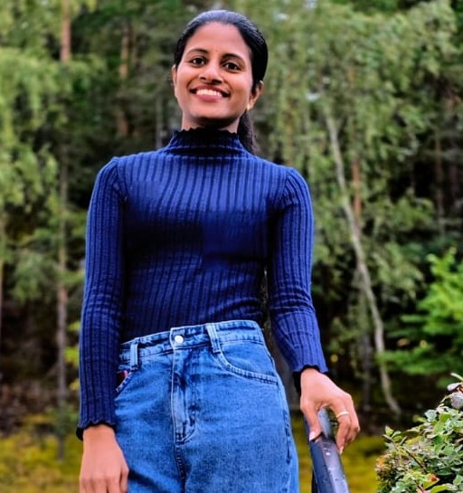

I am an AI Engineer with a strong foundation in software development, data engineering, and computer science. Over the past few years, I have transitioned my focus toward Artificial Intelligence and Machine Learning, gaining hands-on experience through academic projects, internships, and industry collaboration. I enjoy working with Python, data, and modern AI technologies to explore complex problems and develop solutions that are both practical and reliable.
What motivates me most is the opportunity to learn, experiment, and turn challenging problems into meaningful solutions. My experience includes working with machine learning, deep learning, generative AI, RAG, computer vision, and data-driven applications. I am now looking to apply this combination of engineering experience and AI knowledge in a professional environment where I can contribute, grow, and build technology that creates real-world impact.
Currently looking for opportunities in AI, ML, and Data Science. I like tackling hard problems and working with teams to build practical, impactful AI solutions. Let's connect if you're hiring or just want to chat.